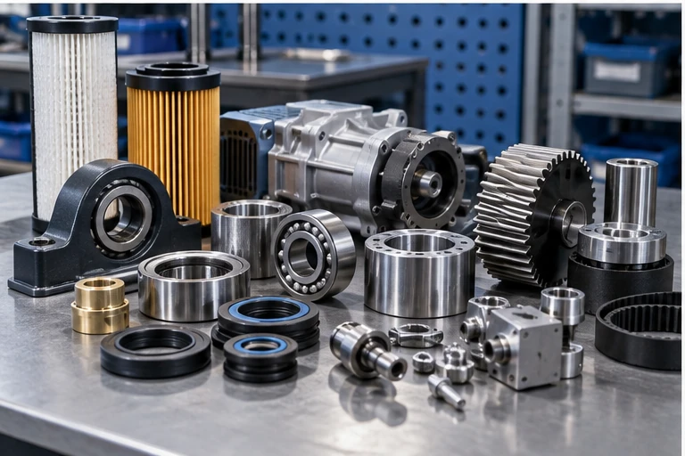
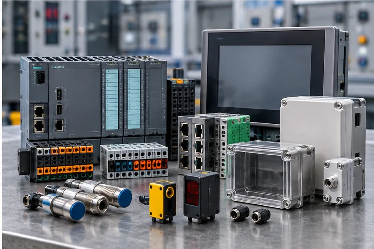
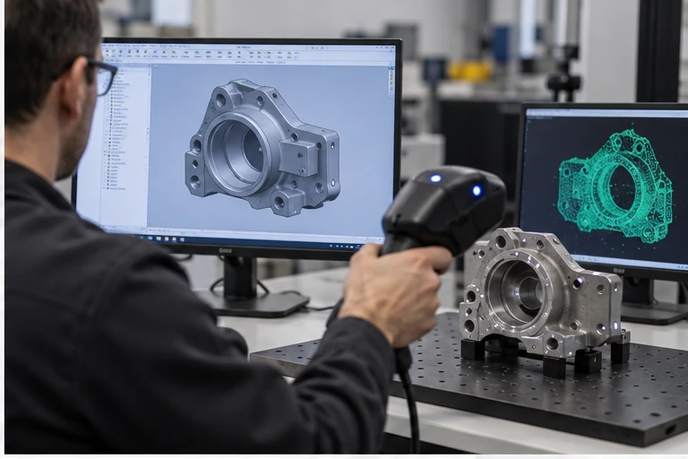
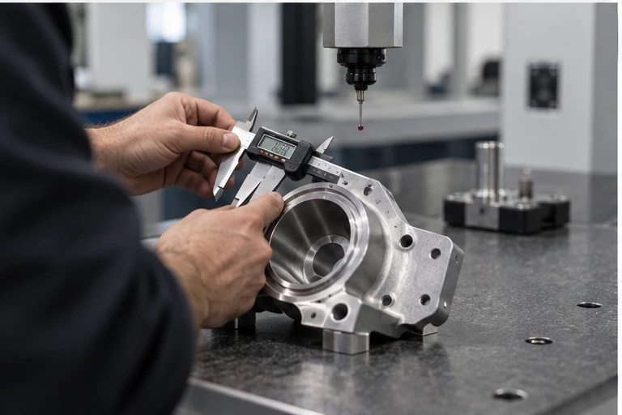
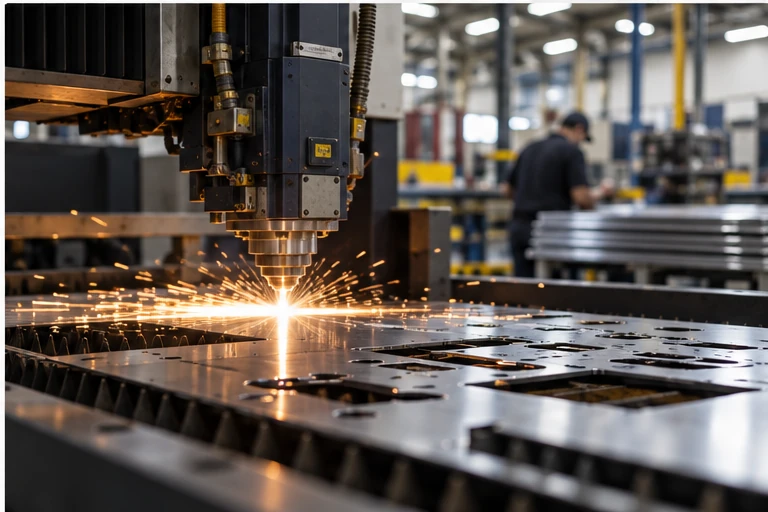
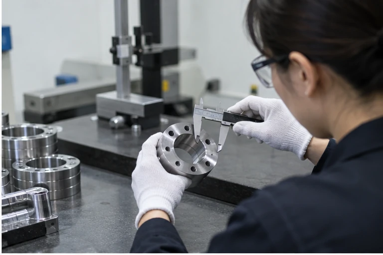

01
Advanced Manufacturing & Components
Laser cutting, laser welding, laser marking, 3D printing, fabrication, machining and custom industrial components.
EXPLORE →From design and custom components to machine maintenance, automation, industrial spares, quality systems and business support — Crecer Grande helps manufacturing and engineering businesses solve practical industrial requirements.
Crecer Grande brings engineering, manufacturing, products, maintenance, automation, quality, tenders and inspection under one practical industrial-support platform.

Laser cutting, laser welding, laser marking, 3D printing, fabrication, machining and custom industrial components.
EXPLORE →
Mechanical design, 3D CAD, manufacturing drawings, DFM, reverse engineering, BOM and technical documentation.
EXPLORE →
Laser consumables, chiller pumps and spares, bending tooling, automation hardware, CNC/VMC parts and hard-to-source components.
EXPLORE →
Breakdown support, preventive maintenance, troubleshooting and maintenance coordination for industrial machinery.
EXPLORE →
PLCs, HMIs, I/O modules, Industrial IoT gateways, sensors, controls, panels and retrofit-oriented support.
EXPLORE →
ISO/QMS implementation, documentation, audit readiness, business-registration guidance and certification coordination.
EXPLORE →
Tender discovery, basic eligibility review, bid-document preparation, submission assistance and related support.
EXPLORE →
Dimensional, visual and pre-dispatch inspection support, vendor-quality follow-up and structured reporting.
EXPLORE →We can start from different levels of information and define what additional data is required before execution.
2D drawing, STEP, STL, DXF or manufacturing specification.
Existing or damaged component for measurement and reverse engineering.
Photos, machine nameplate or part markings for initial identification.
Tell us what the component or machine needs to do and we can discuss the route.
Model-dependent laser components, chiller pumps, sheet-metal bending tooling and automation hardware. Compatibility is checked before quotation.

Nozzles, protective glasses, ceramic parts, lens holders, selected optics and laser-head wear parts.
View details →
Press-brake punches, V-dies, segmented tooling and related bending components subject to machine and application compatibility.
View details →
PLCs, HMIs, I/O modules, gateways, sensors, control components, DIN-rail hardware and industrial housings.
View details →
Replacement pump sourcing for chiller systems serving 1500W, 2000W, 3000W and 6000W laser-system classes — exact pump matched by chiller and duty.
View details →The exact route depends on the job. We coordinate only the stages genuinely required for the specific requirement.

Understand the requirement from the available input.

Create or refine technical information where required.

Check fit, geometry, feasibility or prototype before full execution.

Manufacture, fabricate, machine, print, mark or source the item.

Support installation, troubleshooting or maintenance where included.

Dimensional, visual or agreed quality checks before completion.

Deliver the item, documentation or follow-up support as agreed.
For model-dependent products, the website routes customers to a formal quotation. For planning, the estimate page includes GST, sheet-weight and 3D-print material calculators without inventing selling prices.
Laser optics, pumps, PLC modules and machine spares should not be selected only by appearance.
Engineering-led coordination, technical information discipline and a flexible execution model designed around real requirements.
Requirements are reviewed from a technical and manufacturability standpoint.
Suitable for one-off, low-volume, repeat and maintenance-oriented requirements.
Model-dependent spares are checked against available machine, head, chiller or part information.
Multiple manufacturing or support stages can be coordinated where the job genuinely needs them.
Shop-floor and design guidance covering measurement, machining, fabrication, laser processing and quality.

A practical shop-floor reference for metric coarse tap drills and general-purpose clearance holes, with the difference between a tapping hole and a bolt clearance hole explained clearly.
Read insight →A practical guide to external, internal and depth measurement with a vernier or digital caliper, including zero checks, alignment and repeatability.
Read insight →A practical introduction to air bending, V-die selection, inside radius, bend allowance and the information required before bending sheet metal.
Read insight →Send a drawing, sample, photograph, machine model, part number or problem statement. We will identify the most practical next step.